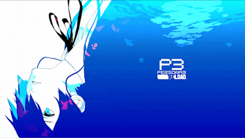

Camilla Vitoria Silva.
19 anos.
Azul e vermelho escuro.
Solteira.
Líder natural, cozinhar, imitar vozes, boa com jogos de ritmo.
Jogos (fã mais fraca de Sonic e Persona), animes, conteúdo de terror e explorar/aprender coisas novas.
Yun Li - Lost in Translation ft. SHO-SENSEI!!!
Lasanha e mousse de maracujá.
JavaScript, CSS, HTML e SQL.
